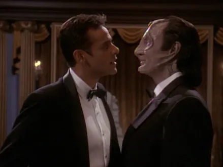
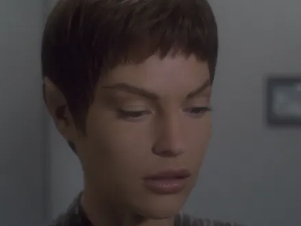
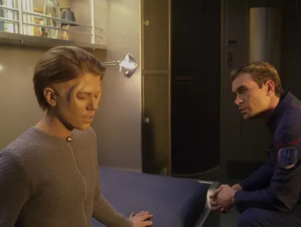
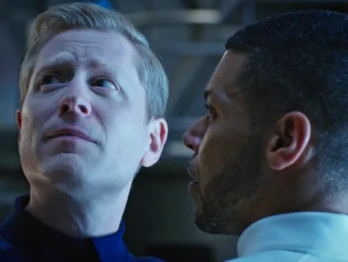
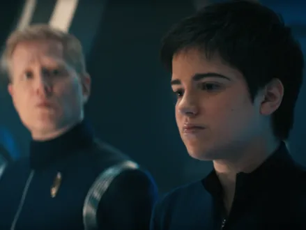
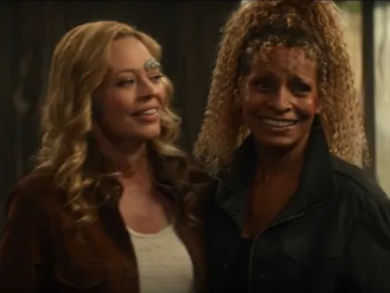
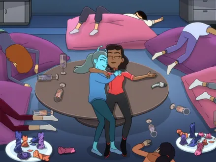

@c6reviews.
@c6reviews.Star Trek is known for being progressive, but it did struggle a little bit with LGBTQ+ representation in the 90s. It was just difficult to address certain topics on television in that time, so Trek always had to go about it in a very roundabout way. In this article, we'll take a look at how Trek handled (or mishandled) LGBTQ+ stories across its different iterations. For any shortcomings it might have had in the 90s, one will notice that there aren't any episodes from The Original Series in this list, for the simple reason that it would have been impossible to address anything like that in the 60s. Heck, they were still handling the controversy of interracial couples in those days. But Trek made an important advancement: from having to obfuscate LGBTQ+ themes in the 1990s, to including LGBTQ+ characters just living their normal lives after 2017. Compiling these episodes together for Pride Month is certainly not novel – it's been done before, so I'm not claiming any sort of unique idea here. But it's definitely worth a revisit, so sit back and enjoy this selection of Trek episodes for Pride Month!
Second Generation Trek (1987-2005)

TNG 3x16: The Offspring
(1990) While not specifically LGBT-themed, this story about Data creating an android offspring was progressive in that Data allowed his child, Lal, to select their own sex and appearance. After reviewing a litany of options, Lal chose the appearance of a human female. The story portrays self-determination and identity choice as uncontroversial; Data accepts Lal's choice freely and without judgement. It's overall a strong episode and it's a great place to start this playlist.

TNG 4x23: The Host
(1991) This is the very first appearance of the Trill, a species that is actually a blend of two beings: the host and the symbiont. When a host dies, the symbiont lives on, and the memories are transferred into a new host which may or may not be the same sex as the old host. In this story, Dr. Crusher falls in love with a Trill man named Odan, and is then troubled when he is injured and requires a new host body. To the Trill, living several lifetimes – some as a man, and some as a woman – is perfectly natural. In this story, Dr. Crusher admits that it is perhaps a failing that she can't embrace the changes that would come with being in a relationship with a Trill, which is an unfortunate ending for what is supposed to be an idealized future where “non-traditional” relationships should not be controversial. The final scene, though very tame by today's standards, was a bit of an envelope-pusher for television at the time. This episode would eventually lead to the introduction of the character Jadzia Dax in Star Trek: Deep Space Nine, allowing us a deeper dive into the Trill way of life.

TNG 5x17: The Outcast
(1992) This episode is a direct and intentional allegory for LGBTQ+ identity. The Enterprise crew works with an androgynous race called the J'naii. They believe it is a disorder when an individual in their society has feelings of being either male or female. Matters become complicated when Riker falls in love with a J'naii pilot who has inclinations and feelings of being female. The episode received mixed reviews, with some saying it didn't go far enough to address LGBTQ+ issues, but for 1992, it was pretty progressive. Still, actor Jonathan Frakes (Riker) believed in retrospect that the role of Soren should have been played by a male actor to make the allegory even clearer, and the fact that the episode does not end with a positive resolution left fans feeling disappointed where Trek is supposed to be an optimistic vision of the future. This episode is remembered both as a significant achievement for 1990s television and also for the limits faced by creators at the time.

DS9 4x06: Rejoined
(1995) Continuing with the lore of the Trill species, this episode marks Star Trek's first same-sex kiss: it's between Jadzia Dax and her former wife, Lenara Kahn. This story explores how love between two Trill can carry on even after changing host bodies several times. This episode didn't rely as much on metaphor like “The Outcast”, but instead directly put two women in a romantic relationship and asked the audience to empathize with them.

DS9 4x10: Our Man Bashir
(1995) All right, this one is a little bit of a stretch, but there's always been something peculiar about Garak's interest in Doctor Bashir. Although never explicitly addressed on screen, actor Andrew Robinson (Garak) indicated that he always played his interactions with Bashir to be subtly queer-coded. In this episode, the duo are front and center in a Bond-style holodeck spy mystery. You can be the judge if these two are a bit more than friends, but this episode had many fans believing that the relationship between Garak and Bashir could have easily become romantic if 1990s television had been more accepting. The dynamic between these two characters was directly referenced in canon later, in LOW 5x09: Fissure Quest, where alternate versions of Garak and Bashir from another universe were in an openly same-sex romantic relationship.

ENT 2x14: Stigma
(2003) T'Pol is essentially shunned by her own people for having contracted a disease that they believe to be the result of inappropriate behavior. As one of the Vulcans put it, “We're hesitant to discuss Pa'nar Syndrome, Doctor. This illness is unique to a subculture, a small percentage of our population. Their behavior is neither tolerated nor sanctioned.” This is, of course, an allegory for the HIV/AIDS epidemic of the 1980s in which gay and bisexual men were disproportionately impacted.

ENT 2x22: Cogenitor
(2003) In this episode, the Enterprise crew works closely with the Vissians, a race that includes a third sex called “cogenitors”. Things get a little complicated when Tucker objects to how the cogenitors are treated like second-class citizens. I hesitated adding this episode to the list, because it's not as much a direct allegory for LGBTQ+ issues, but rather it tackles some broader questions of gender identity, social roles, and self-determination. One should be very cautious about categorizing this episode as LGBTQ+ coded, because it runs the risk of equating the LGBTQ+ community with simply “unusual sex and gender stuff that we aren't used to”. Still, understanding that the episode is included here with the best of intentions, it is a highly-regarded episode and worth a watch.
Third Generation Trek (2017-present)

DIS 1x09: Into the Forest I Go
(2017) Twenty-two years after Trek's first same-sex kiss between two women, this episode marks the franchise's first romantic kiss between two men. Scientist Paul Stamets and Doctor Hugh Culber's long term relationship was first introduced some episodes earlier, in DIS 1x05: Choose Your Pain, making them the first openly-gay main characters ever to be portrayed in Star Trek. This is an extremely important shift from Trek in the 90s and early 2000s: they no longer need to use allegory to covertly address LGBTQ+ themes. Here, instead, a long-term, homosexual relationship is portrayed as simply a normal and uncontroversial truth. There is no alien influence at work, no sci-fi body switching story, no mysterious third gender – it's just two human men in love, and it is beautiful.

DIS 3x08: The Sanctuary
(2020) Season 3 of Discovery introduced the first transgender and non-binary characters to the franchise, in the persons of Gray Tal and Adira Tal, respectively. In this particular episode, Adira confides in Stamets, coming out as non-binary and requesting they/them pronouns. The scene is brief, to the point, and entirely free of drama, making this moment exactly what it should be: important to the people involved, but not in any way an unusual or controversial event that encompasses a huge part of the story. Many non-binary viewers found the scene meaningful because it modeled an ideal response from Stamets: a simple and supportive “okay”. Pronouns simply don't need to be dramatic.

PIC 2x10: Farewell
(2022) Seven of Nine and Raffi were seen at the end of Season 1 of Picard holding hands with their fingers intertwined. After a season-long tension between the two, Raffi and Seven have a sober conversation in the Season 2 finale about their respective issues, and Seven cuts the tension by pulling Raffi in for a passionate kiss. Seven genuinely smiles, something we very rarely get to see her do.

LOW 3x06: Hear All, Trust Nothing
(2022) The important thing to note about these last few examples in modern Trek is that there usually isn't some big sci-fi story centered around a tangential LGBTQ+ theme, but rather these episodes simply depict LGBTQ+ individuals and relationships simply existing without fanfare or a spotlight. In Lower Decks Beckett Mariner and Jennifer go on dates and have arguments and interact naturally, just like any other couple. This episode is a good example of them spending a mostly-normal time together... except maybe for when Mariner phasers all of Jennifer's friends and then the couple phaser themselves, too, so as not to appear guilty. Yeah, that's a little chaotic.
You may have also noticed that Star Trek: Voyager doesn't have any representation on this list. There was just a full absence of LGBTQ+ coded stories in Voyager, which is fine, but that absence is notable. (Say what you will about Harry Kim's infatuation with Tom Paris.) Anyway, which of these is your favorite? Did I miss any? ◼